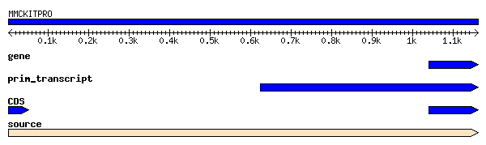

- Perl objects for manipulating bioinformatics-related data, including:
- Classes that represent commonly-used data types (sequences, maps, phenotypes, trees, etc.)
- Utility functions that operate on those data types (sequence translation, feature intersection, etc.)
- Wrapper code for a large number of external bioinformatics tools and databases
- General design principles:
- All classes inherit from Bio::Root::RootI, which has methods for:
- Printing warnings and stack traces
- Argument processing
- Memory deallocation/cleanup
- Use of Perl "interface" classes to define behavior, e.g. Bio::SeqI
- These are actually more similar to abstract classes than interfaces
- Interface methods call Bio::Root::RootI::throw_not_implemented()
- Allows non-Bioperl classes to be made Bioperl compliant
- Frequent use of multiple inheritance
Some notable Bioperl classes and packages:
- Sequences -- Bio::SeqI -- Bio::Seq, Bio::LocatableSeq, Bio::Seq::RichSeq, Bio::Seq::LargeSeq, Bio::Seq::SeqWithQuality
- Features -- Bio::SeqFeatureI -- Bio::SeqFeature::Generic, Bio::SeqFeature::Computation, Bio::SeqFeature::Gene::GeneStructure
- BLAST/search results -- Bio::Search, Bio::Search::Result, Bio::Search::Hit, Bio::Search::HSP
- Database interaction - Bio::DB, Bio::DB::GFF, Bio::DB::GenBank, Bio::DB::SwissProt
- Other -- Bio::Align::AlignI, Bio::Assembly, Bio::Biblio, Bio::Graphics, Bio::Ontology
- Flat file input/output -- Bio::SeqIO, Bio::AlignIO, Bio::SearchIO
Two simple example scripts (from the Bioperl tutorial):
- Retrieve a SWISS-PROT sequence (result files: roa1.fasta roa1.swissprot):
use Bio::Perl;
my $seq_object = get_sequence('swissprot',"ROA1_HUMAN");
write_sequence(">roa1.fasta",'fasta',$seq_object);
write_sequence(">roa1.swissprot",'swiss',$seq_object);
- Run a BLAST search (result files: roa1.blast):
use Bio::Perl;
$seq_object = get_sequence('swissprot',"ROA1_HUMAN");
# uses the default database - nr in this case
$blast_report = blast_sequence($seq_object);
write_blast(">roa1.blast",$blast_report);
Another example:
- Using Bio::Graphics to render sequences retrieved by Bio::Perl::get_sequence:

|
Original GenBank entry retrieved by Bioperl: X65998
Bioperl CGI script that retrieves the GenBank record and generates the image: bioperlSeqPng.cgi
Small helper module that interfaces the CGI script with Bio::Graphics package: BioGraphicsUtil.pm |
|